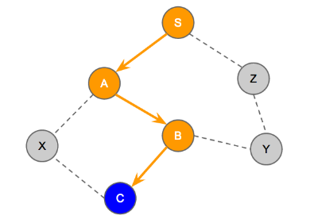

We can model this problem as a graph problem where the cities are nodes in the graph and the bidirectional flight tickets between cities are the bidirectional edges connecting the nodes. Each node has a distinct zip code number. The given constraints on the tickets and how it should be used can be modelled as a modified depth-first-search-like traversal where: when we visit a node, we are not required to visit all of its neighbors but in the end all nodes must be visited. When a node is visited, its zip code is printed (i.e., pre-order traversal). When all nodes have been visited, the printed (concatenated) zip codes must form the smallest number possible.
The small input has at most 8 nodes. It is small enough that we can try all possible paths according to the rules (including all possible starting nodes), and pick the one with the smallest number (of concatenated zip codes). The brute force solution can have a time complexity of O(N! * N), where N! comes from having to potentially list all possible permutation of cities and for each permutation we can check its validity in O(N). As the large input can have up to 50 cities, this algorithm will be too slow. Therefore we propose an alternative solution to handle the large input.
We can rank nodes based on its zip codes (i.e., the smallest node is the node with the smallest zip code). Since all of the zip codes are the same length, we can think of each zip code as a single digit number and to form the smallest concatenated digits we can just greedily concatenate the digits in increasing order. This means that the node with the smallest zip code should be the first node to be visited (i.e., the source node for the traversal). Thus, to minimize the final concatenated number, we should always visit the next smallest feasible node (we will discuss node feasibility later). Note that it is always possible to complete the traversal from the smallest node (or any node) since the input graph is connected.
Before we provide the pseudocode of the greedy algorithm, let’s define some variables. We provide examples that make use of these variables in subsequent paragraphs:
At each step, we may either:
With that, we are ready to present the pseudocode for our greedy algorithm:
root = the node with smallest zip code
DEAD = new Set()
ACTIVE = new Stack()
ACTIVE.push(root)
answer = “”
concatenate zipcode[root] to answer
while ACTIVE is not empty:
HEAD = ACTIVE.peek()
next = next_smallest_feasible_node_to_visit()
if next is EMPTY or no flight from HEAD to next:
# leave the HEAD node
insert HEAD to the DEAD set
ACTIVE.pop()
else:
# visit the next node
ACTIVE.push(next)
concatenate zipcode[next] to answer
print answer
Now, the hard part is: how do we compute the next_smallest_feasible_node_to_visit()? We first demonstrate it with an example.
Suppose we have a graph and we start traversing from the source node S (which has the smallest zip code). Suppose the next nodes with smallest zip codes are nodes A, B, C in that order and A is connected to S, B is connected to A, and C is connected to B. Then the greedy algorithm will go from S -> A -> B -> C. The figure below shows the current state of the traversal and the rest of the graph. Nodes S, A, B, C are in the ACTIVE stack where C is the HEAD:
How do we pick the next smallest feasible node to visit from C? Could we arbitrarily pick a node that is connected to the ACTIVE stack then decide to visit that node next? Actually not. We investigate the following three scenarios to clarify why we cannot arbitrarily pick a node connected to the ACTIVE stack.
From the scenarios above, we know that Z is not feasible as the next node but both X and Y are feasible and we can visit the one with the smaller zip code first.
In general, we need to be able to figure out if a node is feasible as the next node. To do so, we can instead ask when is a node not feasible as the next node. It is not a feasible node if by visiting that node, some nodes that are not-yet-visited become unreachable from the nodes in the ACTIVE stack (i.e., they can never be visited later because they are disconnected from the ACTIVE set due to some nodes that will be placed in the DEAD set when taking the return flight as in Scenario 1). Observe that nodes that are still reachable from nodes in the ACTIVE stack can still be visited later.
To check whether the not-yet-visited nodes are still reachable from the ACTIVE nodes, we can do a connectivity check (via breadth-first-search or depth-first-search) from the source node to all the not-yet-visited nodes, avoiding the DEAD nodes. Note that since all ACTIVE nodes are all connected to the source node, doing the connectivity check from the source node is equivalent to doing the connectivity check from all ACTIVE nodes.
Now, we are ready to devise an iterative algorithm to find the feasible nodes and pick the smallest node. Referring to our example above, in this iterative algorithm we will generate X, Y and Z in that order. The algorithm will terminate when we reach Z (please refer to Scenario 1 for the reason). Note that when this algorithm returns, it should not alter the ACTIVE stack and the DEAD set. Therefore, when running this algorithm we can either make a local copy of the ACTIVE stack and the DEAD set, or restore the changes we made (if we run this algorithm in place). The iterative algorithm is as follows:
The following pseudocode shows one way to implement the above algorithm (with in place modification of the ACTIVE stack and DEAD set, and restoration of the changes before returning):
def next_smallest_feasible_node_to_visit():
temp = new Stack()
best = EMPTY
while ACTIVE is not empty:
HEAD = ACTIVE.top()
# Check the neighbors of HEAD and record the
# next smallest node as best.
for each neighbor i of HEAD that is not-yet-visited:
if best == EMPTY or zipcode[i] < zipcode[best]:
best = i
# Abandon HEAD and go back up in the ACTIVE stack.
insert HEAD to the DEAD set
temp.push(HEAD)
ACTIVE.pop()
if there exists a not-yet-visited node that \
is not reachable from the source node:
break
# Restore the ACTIVE nodes and the DEAD set.
while temp is not empty:
HEAD = temp.top()
remove HEAD from the DEAD set
temp.pop()
ACTIVE.push(HEAD)
return best
How fast is this greedy algorithm? The greedy algorithm calls the search for the next smallest feasible node routine N times. Each search runs through all the nodes in the ACTIVE stack with at most O(N) nodes. For each node in the ACTIVE stack, we perform one connectivity check that takes O(N) time, and we loop through all of the node’s O(N) children. Therefore overall, it is O(N3), which fits easily into the time limits.